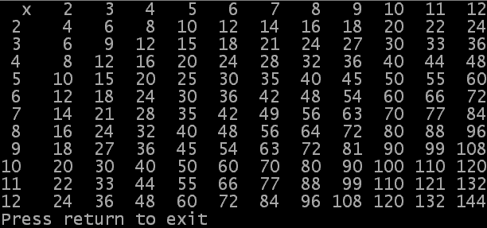

Each solution explains what is happening and why something is being done in the comments.
5.1) Write a small piece of code to investigate the comparison operators. Use two or three variables and use If...EndIf blocks to print a message depending on the result of the comparison. Make sure you fully understand how they work, and also the logical operators (And and Or). Use a console to display the messages and remember to check that it could be opened correctly. (Solution)
5.2) Use two nested For...Next loops to display the values 0 to 255 in the console. You should only display 16 numbers in each line. You do not need to worry about making the output look "pretty" at this time (such as values aligned in columns). (Solution)
5.3) Change your code for exercise 5.2 so that it only displays the values 32 to 127, again showing 16 values per line. (Hint: use two nested For...Next loops and use an If...Else...EndIf block so that it does not print the last number). (Solution)
5.4) Write a program which uses a While...Wend loop to count from 1 up to 99. Inside this loop you should convert the current value of the count in words. To do this, you should have an If...Else...EndIf block (to perform special processing for the range 10 to 19) and within those, two Select...EndSelect blocks which are used to convert the value of the count digits to words.
You can put additional pauses in the program if you wish, to be able to see the output of your program. (Solution)
5.5) As an additional challenge, change one of your solutions to either exercise 5.2 or 5.3 so that the values are aligned in columns, without using any of the string manipulation commands. (Solution)
 5.6) Use a Repeat...Until loop with a For...Next loop inside it to display a table of multiplication (each value in the table should be its column number multiplied by its row number). Print a header line along the top showing the values for each column and a value at the start of each row. Make your table run from 2 to 12 in both rows and columns and make each column aligned. An example of the output of this program can be seen to the side. (Solution)
| Previous topic | Chapter contents | Next topic |
|---|---|---|
| Summary | User Guide contents | None |